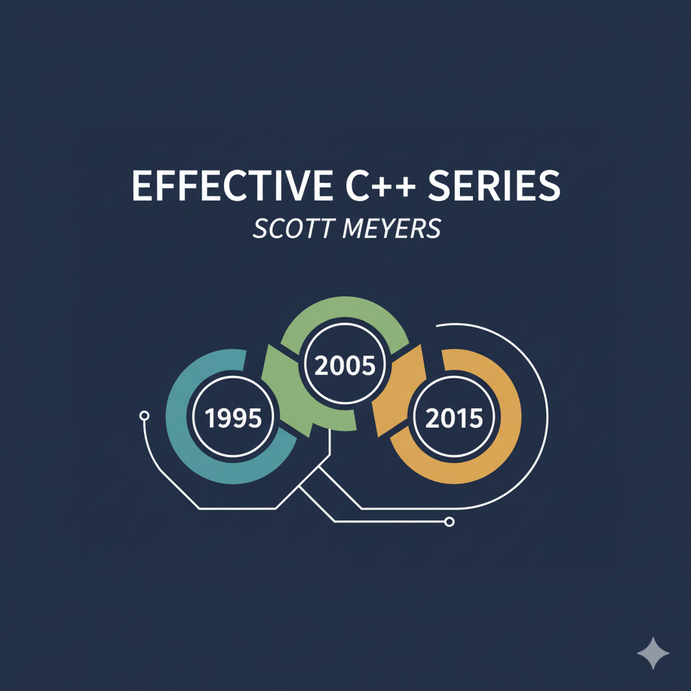

Effective C++ (2005)
Accustoming Yourself to C++
Item-1: View C++ as a federation of languages
C++ encapsulates multiple programming paradigms Object Oriented, Template Metaprogramming, Functional, Generic. It is more of a federation of languages.
Item-2: Prefer const enum and inline to #define
Prefer compiler over preprocessor
Don’t
Consider the following piece of code
#define ASPECT_RATIO 1.653The issue is that the symbolic name “ASPECT RATIO” is never visible to compiler as it get replaced by the preprocessor everywhere within the code making it does not being registered on symbol table. This makes it interpret the errors during compilation as it’ll refer to 1.653 rather than ASPECT RATIO, also makes hard in symbolic debugging as there is no corresponding symbol.
Do
const double ASPECT_RATIO = 1.653;This can not only register in symbol table but also allows compiler to dispatch optimisations.
2 Special cases to consider when using const in place of #define
Constant pointers
It is advised to do a const pointer pointing to a const object i.e.
const char *const name = "Swayam"; // OR const std::string name("Swayam");Class-Specific constants
To ensure the scope of constant to a class, we need to make it a member and also to make sure there are no duplicate copies, make it
staticclass GamePlayer{ private: static const int NUM_TURNS = 5; // constant declaration int score[NUM_TURNS]; }An important point here is that the above is constant declaration (not definition). C++ requires programmer to provide the definition for anything we use, but class-specific constants that are
staticand of integral type (int, char, bool) are exception.As long as we don’t use their address, we can declare them and use them without providing a definition
The definition can be provided as follows (must need to be at the namespace scope level)
const int GamePlayer::NUM_TURNS;Not providing any value as it is being already initialized at declaration. For any other (non-integral data type) initialization at declaration time can give error (Can use
constexprto achieve that)#include<iostream> class A { private: static const double f; // constexpr static const double f = 10.9; // this also works public: void print() { std::cout << this->f << std::endl; } }; const double A::f = 10.9; // if not then get linking error that undefined reference int main() { A a = A(); a.print(); return 0; }Note that cannot use
#definefor class scoped constants, as those macros are entire lifetime unless manually being#undefnor they agree to encapsulation like private or publicThe enum trick
enumvalues are compile-time constants built into the type system, no storage needed. Consider the following code#include<iostream> class A { private: static const int NUM; int scores[NUM]; }; const int A::NUM = 10Here
NUMneeds to be known at compile time to create the array of NUM size but that is defined later in the scope. We can use the enum hack for this#include<iostream> class A { private: enum {NUM = 10}; int scores[NUM]; };This is worth knowing as
- It is more like
#definethanconst, i.e. it is legal to take the address of a const but it is not legal to take the address of an#definemacro as well as same forenum - Good compilers usually don’t allocate storage for compile time constants, unless user is access the address somewhere in code
- Other reason for worth knowing is that lots of code use this, so need to be aware.
- It is more like
Another major issue using
#definedirective is using it to implement macros that look like functions but that don’t incur the overhead of a function call.// call f with the maximum of a and b #define CALL_WITH_MAX(a, b) f((a) > (b) ? (a) : (b))This is very painful to think even, you have to remember to parenthesize all the arguments in the macro body. I prefer it doing as
template <typename T> inline void CALL_WITH_MAX(const T &a ,const T &b){ f (a > b ? a : b) }
Item-3: Use const whenever possible
const and pointers
Consider the following code
const int *p; // non-const pointer to const int data
int *const p; // const pointer to non-const int data
int const *p; // non-const pointer to const int data
const int *const p; // const pointer to const int dataRule of thumb: const applies to whatever the immediate left to it, if nothing then whatever is immediate right to it.
Function declarations
It is a good habit to keep the const constraints on the function declaration to keep the consistency with the client. Also returning a const from a function might not make sense but sometimes it can be a good habit
class Rational {...};
const Rational operator* (const Rational &lhs, const Rational &rhs);
// this can prevent the doings like
// (a*b) = c although sometimes this is what a user wants but unlikely from a user-defined typeconst Member functions
The purpose of const member functions is to operate on the const objects (they can also call by the non-const objects) but gurantees to not modify the object’s properties. The 2 variants can be overloaded to ensure the seprate functionalities
class MyVector {
private:
int* data;
size_t size;
public:
MyVector(size_t s) : size(s) {
data = new int[s];
}
// Non-const version - returns modifiable reference
int& operator[](size_t index) {
std::cout << "Non-const version called\n";
return data[index];
}
// Const version - returns read-only reference
const int& operator[](size_t index) const {
std::cout << "Const version called\n";
return data[index];
}
~MyVector() { delete[] data; }
};
int main() {
MyVector vec(5); // non-const object
const MyVector constVec(5); // const object
vec[0] = 10; // ✅ Calls non-const version, returns int&
int x = vec[0]; // ✅ Calls non-const version (but we can't modify)
int y = constVec[0]; // ✅ Calls const version, returns const int&
// constVec[0] = 20; // ❌ ILLEGAL - const version returns const int&
}There are 2 notions of defining constness
bitwise const: No member variables are modified (this is what c++ follows)
class CTextBlock { public: char& operator[](std::size_t position) const { return pText[position]; } private: char *pText; // The POINTER itself is not modified }; int main() { const CTextBlock ctb("Hello"); ctb[0] = 'J'; // ✅ Compiles! But we just modified a const object! // Now the "const" object "ctb" contains "Jello" instead of "Hello" }logical constness The object’s observable state doesn’t change (this is what violated above). There can be cases when a method cannot be bitwise const but logically it can make sense
class CTextBlock { public: ... std::size_t length() const; private: char *pText; std::size_t textLength; // last calculated length of textblock bool lengthIsValid; // whether length is currently valid }; std::size_t CTextBlock::length() const { if (!lengthIsValid) { textLength = std::strlen(pText); // error! can't assign to textLength lengthIsValid = true; // and lengthIsValid in a const } // member function return textLength; }It seems fine “logically” even for a const object but compiler won’t agree as it violates the bitwise constness. Solution is in the next subsection
mutable
mutable keyword frees the non-static data members from the constraints of bitwise constness.
class CTextBlock {
public:
...
std::size_t length() const;
private:
char *pText;
mutable std::size_t textLength; // it can vary
mutable bool lengthIsValid; // this too, even in const member functions
};
std::size_t CTextBlock::length() const
{
if (!lengthIsValid) {
textLength = std::strlen(pText); // now fine
lengthIsValid = true; // also fine
}
return textLength;
}Casting away the constness
Consider one more scenario, mutable is actually good to solve some certain mutability within const methods, but still usually we have 2 overloaded function of operator[] one returning the direct alias and other returning an const alias for const objects. Situation can comes in that both of these oeprators perform some more work like, reading data, manipulting it, some conditional checks, some logging, etc. This can lead to redundant code duplicate as both performing same thing. One solution is to one or more private methods and call them but still the calls are duplicated, so the idea what if we implement one operator[] and use it twice
It is a bad idea, but sometimes can be taken as a pinch of salt
So one might try
char& operator[](std::size_t position) {
return (*this)[position]; // ❌ INFINITE RECURSION!
// Calls itself, not the const version
}Here *this is still the same non-const object hence everytime it is going to call itself, following is the step by step understanding of right method using const_cast
// step 0: Have the const version implemented
// step 1: cast the non-const object (*this) to const
static_cast<const TextBlock&>(*this);
// step 2: now call the [] operator (should call the const version)
static_cast<const TextBlock&>(*this)[position]; // this returns `const char&`
// step 3: Remove const from returned value
const_cast<char &>(
static_cast<const TextBlock&>(*this)[position]
);
============================================================================================
// In end it should be like
const char & operator[](std::size_t position) const {
.... // preprocessing
return text[position];
}
char & operator[](std::size_t position) {
return const_cast<char &>(
static_cast<const TextBlock&>(*this)[position]
);
}Note-1: if *this is already a const object then you CANNOT do static_cast<TextBlock &>(*this); i.e. you cannot remove the constness, use const_cast for that
Note-2: having the non-const implemented and calling the const will get compiled but again, there are chances that implemented non-const can modify the properties, so always call const from a non-const
Item-4: Make sure that objects are initialized before they’re used
Its my own experience in working with different kernels and Operating Systems, please initialize after allocation, else a heisenbug will be waiting for you
Reading uninitialized values is an undefined behaviour
So there are rules that decide when object initialization is guranteed to take place and when not, but those rules are complex. So just initialize them if you are going to use them.
Difference between assignment and initialization
Consider the following code
class PhoneNumber {...};
class ABEntry {
public:
ABEntry(const std::string & name, const std::string &address, const std::list<PhoneNumber> &phones);
private:
std::string theName;
std::string theAddress;
std::list<PhoneNumber> thePhones;
int numTimesConsulted;
};
ABEntry::ABEntry(const std::string & name, const std::string &address, const std::list<PhoneNumber> &phones) {
theName = name; // all these are not initializations, they are assignments
theAddress = address;
thePhones = phones;
numTimesConsulted = 0;
}It may work with the values we expect but THIS IS NOT INITIALIZATION, IT IS ASSIGNMENT.
The rule is that, data members of an object are initialized before the body of the constructor is entered
(This isn’t true for built-in types though)
A better way is to use Member Initialization List instead of assignments, remember the initialization order must follow the declaration order of members
ABEntry::ABEntry(const std::string& name, const std::string& address,
const std::list<PhoneNumber>& phones)
: theName(name),
theAddress(address), // these are now all initializations
thePhones(phones),
numTimesConsulted(0)
{} // the ctor body is now emptyEarlier with constructor assignment, the compiler will call the default constructor and then use copy assignment operator to override the values. With Member Initialization list, all the members are initialized using the copy-constructor of corresponding objects.
We can also use the same for default constructor
ABEntry::ABEntry()
:theName(), // call theName's default ctor;
theAddress(), // do the same for theAddress;
thePhones(), // and for thePhones;
numTimesConsulted(0) // but explicitly initialize
{} // numTimesConsulted to zeroObjects like const and references must be initialized, they can’t be assigned, hence here the use of member initialization list method is a must
Order of initialization of non-local static objects defined in different translation unit
- A static object is one that exists from the time it’s constructed until the end of the program
- Stack and heap-based objects are thus excluded. Included are global objects, objects defined at namespace scope, objects declared static inside classes, objects declared static inside functions, and objects declared static at file scope
- Static objects inside functions are known as local static objects (because they’re local to a function) and the other kinds of static objects are known as non-local static objects
- Static objects are automatically destroyed when the program exits i.e destructor is called on
mainfunction exit - A translation unit is basically, source file + all of its
#includefiles
So the issue is, lets say for initialization our logic depends on the initialization of some other “non-local static object in another translation unit” then there is no way to gurantee that it is being already initialized and good to use. This is actually undefined.
// File: logger.cpp
class Logger {
public:
void log(const std::string& msg) { /* ... */ }
};
Logger globalLogger; // Non-local static object
// File: database.cpp
#include "logger.h"
extern Logger globalLogger;
class Database {
public:
Database() {
globalLogger.log("Database initialized"); // ❌ DANGER!
// What if globalLogger isn't initialized yet?
}
};
Database globalDB; // Another non-local static objectSolution? Function-Local Static Objects wrap those non-static into a function and convert them into a local-static objects, that way refer to that function and it is being guranteed to be initialized
// File: logger.cpp
class Logger {
public:
void log(const std::string& msg) { /* ... */ }
};
// Replace global static with function returning local static
Logger& getLogger() {
static Logger instance; // Local static - initialized on first call
return instance;
}
// File: database.cpp
Logger& getLogger(); // Declaration
class Database {
public:
Database() {
getLogger().log("Database initialized"); // ✅ SAFE!
// getLogger() ensures Logger is initialized before we use it
}
};
Database& getDatabase() {
static Database instance; // Local static
return instance;
}C++11 and further guarantees that Static local initialization is thread-safe
Logger& getLogger() {
static Logger instance; // ✅ Thread-safe since C++11!
return instance;
}Constructors, Destructors and Assignment Operators
Item-5: Know what functions C++ silently writes and calls
For a C++ class (if not created) compiler can implicitly declare their own versions of copy constructor, copy assignment operator, destructor furthermore if there is no constructor then it’ll also declare a default constructor and all of these declarations will be public and inline. There are cases when this is not possible as
#include <iostream>
#include <string>
class A
{
int &ref;
public:
A(int &v) : ref(v) {}
};
int main() {
int i1 = 1;
int i2 = 2;
A a1 = A(i1);
A a2 = A(i2);
a1 = a2;
}Here the privarte class member ref is an reference which cannot be just assigned to a new object leading to a ill-formed default definition, hence compiler will give an error here. Same goes for const members. In these cases users are expected to define their own. Finally compilers reject the implicit copy assignment operators in derived classes that inherit from base classes declaring their copy assignment operator private
Item-6: Explicitly disallow the use of compiler-generated functions you do not want
In case we don’t want compiler to define the functions implictly we can just declare them in the private
class A
{
int ref;
A& operator=(const A&);
public:
A(int v) : ref(v) {}
};And in case if within some friend function or member tries to do use the copy assignment operator then it’ll give the linker-error. Although its good to convert linking errors in conpile time so here in this case we can create a base class
class Uncopyable {
protected:
Uncopyable() = default;
~Uncopyable() = default;
private:
Uncopyable(const Uncopyable&); // declared, no definition
Uncopyable& operator=(const Uncopyable&); // declared, no definition
};And inherit this in the derived class.
In new C++-11 we can also use delete keyword, which always gives compilation error (better option)
Item-7: Declare Destructors virtual in polymorphic base classes
Whoever class is designed or implemented to be inherited by others and provide virtual functions that can be overwritten by the derived classes, must implement an virtual distructor. The reason is in case the pointers to the base classes are being used to manage the derived class’s objects and in case of deleting, not having an virtual distructor will only delete the base part of that derived class leaving the instances of derived data still living and can lead to memory leak.
class TimeKeeper {
public:
~TimeKeeper() { /* cleanup for base */ }
// Notice: destructor is NON-virtual
};
class AtomicClock : public TimeKeeper {
public:
~AtomicClock() { /* cleanup for derived */ }
};
TimeKeeper* getTimeKeeper() {
return new AtomicClock(); // heap object
}
TimeKeeper* p = getTimeKeeper();
delete p; // Uh oh...Polymorphism in C++ requires a virtual destructor if you ever plan to delete derived objects via a base class pointer. Without a virtual destructor, only the base class destructor gets called when you delete through a TimeKeeper*. Fix?
class TimeKeeper {
public:
virtual ~TimeKeeper() { /* cleanup for base */ }
};Not having an virtual destructor in a base class planned to be used in polymorphism is defined as Undefined Behaviour
If a class is not meant to be used virtually (i.e. not contain any virtual functions) means it is not means to be a base calss, hence there is no need to give virtual destructor. Consider the following
class Point { // a 2D point
public:
Point(int xCoord, int yCoord);
~Point();
private:
int x, y;
};The above If an int occupies 32 bits, a Point object can typically fit into a 64-bit register. Furthermore, such a Point object can be passed as a 64-bit quantity to functions written in other languages, such as C or FORTRAN. If Point’s destructor is made virtual, however, the situation changes.
Supporting virtual dispatch forces each object to carry a vptr pointing to its class’s vtbl. That one hidden pointer bumps Point from 64 bits to roughly 96 bits on 32-bit targets and to 128 bits on 64-bit systems, so it no longer fits in a 64-bit register. It also breaks layout compatibility with a plain C struct, so you can’t pass Point across language boundaries without compensating for the vptr.
Now consider one more example
class SpecialString : public std::string {...};
SpecialString *pss = new SpecialString("bad idea");
std::string *ps;
ps = pss;
delete ps;Bad idea, All the STL containers types do not implement any virtual functions or destrutor (Its a design choice).
Now lets talk about Abstract Classes. Classes that can’t be instantiated and it has all the pure virtual functions so what if I do this
class Abstract
{
virtual ~Abstract() = 0;
};Again bad idea, although the code will compile fine. When a derived class object is destroyed, the destructor chain is called from most-derived to base class. The base class destructor ~Abstract() will be invoked, so it needs an implementation. Without it, you’ll get a linker error. So a better option is to have all the functions purely virtual except destructor
class Abstract {
public:
virtual ~Abstract() = default; // Virtual, but not pure
virtual void someFunction() = 0; // Pure virtual function
};Not all base classes are designed to be used polymorphically. Some are just inteded to be the base class like Uncopyable Item-5.
Item-8: Prevent exceptions from leaving destructors
C++ does not prohibit destructors from emitting exceptions but it certainly discourages the practice. In C++ having more than 1 active exception at a time is considered as the undefined behaviour.
How its possible to have more than 1 active exception at a time?
When an exception is thrown, the program doesn’t just “exit” immediately. It performs stack unwinding, destroying all local objects in scope while searching for a catch block. Consider following code
void doSomething() {
std::vector<Widget> v; // 10 Widgets, suppose ~Widget (destructor) throws an exception
throw std::runtime_error("Error!"); // Exception #1 thrown!
} // <-- Program counter comes here during unwindingNow when the #1 exception is thrown, it start unwinding the stack deleting all the local variables to this function, leading to call the destructor of any of the Widget instance leading to have another active exception. Undefined behaviour.
I hope the tip also explains the problem of why destructor should be encouraged to throw an exception. So what to do if they do?
- Terminate the program immediately by calling
std::abort(); - Swallow the exception i.e. just catch and keep the program working. Usually a bad practice as it hides the information of what failed.
Here Scott Meyers also proposed a method to pass the responsibility to the client/user to manually handle if such things happen. I don’t know, I am not happily agree to it. But nevertheless point to be note is that, a destructor should not throw an exception, its a very bad design.
Item-9: Never call virtual functions during construction or destruction
Suppose maintaining a transaction system and logging every type of transaction
class Transaction
{
public:
Transaction();
~Transaction();
virtual void logTransaction() const = 0; // make type-dependent log entry
};
Transaction::Transaction()
{
...
logTransaction(); // log this transaction
}
Transaction::~Transaction()
{
...;
logTransaction();
}
class BuyTransaction: public Transaction
{
public:
virtual void logTransaction() const;
};
class SellTransaction: public Transaction
{
public:
virtual void logTransaction() const;
};
BuyTransaction b; // what logTransaction this will call?In principle, in order to instantiate a derived class the parts of base class instantiate first, hence it’ll call the base class Transaction constructor which itself calls the logTransaction() method for the base class NOT the derived as the derived components aren’t being initialized yet. Same thing with the destruction, the derived class’s elements gets destroyed first hence when the base class destructor calls logTransaction it is again the type call of base not derived (BuyTransaction/SellTransaction)
It is more fundamental that that, Not only do virtual functions resolve to the base class, but the parts of the languauge using runtime information e.g. dynamic_cast or typeid also treat the object as base class type
Some compilers raise a warining about this, some don’t. In case the if the logTransaction would’ve been purely virtual (i.e. no definition in base class) then linker would’ve thrown the error (so sometimes easy to catch this)
So what to do? In such cases keep the function logTransaction non-virtual and instead recieve relevant information from derived to log
class Transaction
{
public:
explicit Transaction(std::string &logInfo);
void logTransaction(std::string &logInfo) const; // make type-dependent log entry
};
Transaction::Transaction(std::string &logInfo)
{
...
logTransaction(logInfo); // log this transaction
}
Transaction::~Transaction()
{
...;
logTransaction();
}
class BuyTransaction: public Transaction
{
private:
static std::string createLogString(parameters); // focus how this function is made static
public:
BuyTransaction(parameters); : Transaction(createLogString(parameters))
{};
};If the createLogString inside BuyTranscation wouldn’t be static then again we will be in dilemma:
BuyTransaction(parameters) : Transaction(createLogString(parameters))
// ↑ Base constructor called HERE
// The BuyTransaction object DOESN'T EXIST YET!At the point where createLogString(parameters) is called:
❌ The BuyTransaction object is not fully constructed
❌ Member variables are not initialized
❌ The this pointer is not valid for the derived class
❌ Cannot call non-static member functions
This would be undefined behavior, you’re trying to use this->createLogString() before this is valid.
static std::string createLogString(parameters);
// ↑ Static = doesn't need 'this' pointer
// Can be called like a regular function
// Doesn't access any instance dataStatic functions:
✅ Don’t need a this pointer
✅ Can be called before object construction
✅ Work like regular functions, just scoped to the class
Item-10: Have assignment operator return a reference to *this
Assignment operation returns a reference to its left hand operand and it is right associative
int x, y, z;
x = y = z = 15; // x = (y = ( z = 15 ))Here, 15 is assigned to z, then the result of that assignment (the updated z) is assigned to y, then the result of that assignment (the updated y) is assigned to x. We should also need to follow this convention for our classes
class Widget
{
public:
Widget& operator=(const Widget& rhs)
{
... // copy logic
return *this;
}
};This convention should follow for all the types of assignment operators like +=, *=, /= etc. Not following convention will compile the code but it may not be as useful with other C++ language features as all built-in as well as STL follow this convention. Do thi only if there is a strong reasoning.
Item-11: Handle assignment to self in operator=
It is very possible to perform a self-assign operation in C++
a[i] = a[j]; // i and j might be same
class Base {..};
class Derived: public Base { ... };
void doSomething(const Class& rb, Derived& pd); // they both can be pointing to same objectTake example of the following code and it’ll show it can be disastrous. We are managing the resource here
class Bitmap {...};
class Widget
{
private:
Bitmap *pb; // pointer to heap allocated Bitmap object
};
Widget&
Widget::operator=(const Widget& rhs)
{
delete pb; // stop using current butmap, free It
pb = new Bitmap(*rhs.pb);
return *this;
}Now suppose if you do the self-assignment operator here then the delete pb statement will delete both source’s as well as the RHS’s bitmap. So how to solve? well an obvious way is to an identity check as
Widget&
Widget::operator=(const Widget& rhs)
{
if (this == &rhs) // identity check
return *this;
delete pb; // stop using current butmap, free It
pb = new Bitmap(*rhs.pb);
return *this;
}There is one more issue in above code, it is also NOT exception-safe i.e. if the call to new failed (maybe because of not enough memory) then we are again left with the invalid pointers. Happily making operator= exception-safe also makes it self-assignment-safe too.
Widget&
Widget::operator=(const Widget& rhs)
{
Bitmap *pOrig = pb;
pb = new Bitmap(*rhs.pb);
delete pOrig; // delete the original
return *this;
}This may not be efficient (can add the identity check) but it works as now we have a backup copy. But still an even better approach is Copy And Swap
Widget&
Widget::operator=(const Widget& rhs)
{
Widget temp(rhs);
swap(temp); // exchange this and rhs's data
return *this; // destructor of temp will clean the old pb
}Item-12: Copy all parts of an object
Tl;dr copy each and everything in the respective class
class Customer
{
public:
Customer(const Customer &rhs);
Customer& operator=(const Customer& rhs);
private:
std::string name;
};
Customer::Customer(const Customer& rhs) : name(rhs.name)
{
logCall("Customer copy constructor");
}
Customer& Customer::operator=(const Customer& rhs)
{
logCall("Customer copy assignment operator");
name = rhs.name;
return *this;
}
class PriorityCustomer: public Customer
{
public:
PriorityCustomer(const PriorityCustomer& rhs);
PriorityCustomer& operator=(const PriorityCustomer& rhs);
private:
int priority;
}
// This is bad
PriorityCustomer::PriorityCustomer(const PriorityCustomer& rhs): priority(rhs.priority)
{
logCall("PriorityCustomer Copy Constructor");
}
// This is too
PriorityCustomer&
PriorityCustomer::operator=(const PriorityCustomer& rhs)
{
logCall("PriorityCustomer copy assignment operator");
priority = rhs.priority;
return *this;
}For PriorityCustomer class in case of the copy-constructor call, issue is the base class’s elements aren’t getting copied so they will be initialized via the default constructor. And in case of the copy-assignment operator call the base class elements remains to original values. We explicitly need to call their copy functions as well
PriorityCustomer::PriorityCustomer(const PriorityCustomer& rhs): Customer(rhs), priority(rhs.priority)
{
logCall("PriorityCustomer Copy Constructor");
}
PriorityCustomer&
PriorityCustomer::operator=(const PriorityCustomer& rhs)
{
logCall("PriorityCustomer copy assignment operator");
Customer::operator=(rhs); // assign base class parts
priority = rhs.priority;
return *this;
}Resource Management
Item-13: Use objects to manage resources
We typically don’t want to rely on user front logic to free the acquired resources since lots of things can go wrong, consider the following example
class Investment {...};
// suppose a factory function is used to instantiate the Investment
Investment* createInvestment(); // return ptr to dynamically allocated object
void f()
{
Investment* pInv = createInvestment();
... // use pInv
delete pInv;
}Its very much possible that something bad can happen in the ... area like exception throwm, an imature return statement or anything that can lead the program logic to not encounter the delete statement. It’ll be better in that cases to free the object as it loses from the scope automatically. C++’s auto_ptr does exactly that
void f()
{
std::auto_ptr<Investment> pInv(createInvestment());
...
// it is guranteed that the destructor wil run for auto_ptr and free the holding resource as well
}This is often called RAII (Resource Acquisition is Initialization) although it is possible that destructing Investment object leads to exception but we already saw in earlier items that this is a bad thing to do.
The thing to note here is that not more than one auto_ptr can point to the same object as that way they all will try to delete the same memory. To ensure this auto_ptr does an bizzare behaviour of transfering ownership on copy
auto_ptr<Investment> pInv1(createInvestment()); // pInv1 owns the object
auto_ptr<Investment> pInv2(pInv1); // Copy constructor called
// pInv1 is now NULL
// pInv2 now owns the object
pInv1 = pInv2; // Copy assignment called
// pInv2 is now NULL
// pInv1 owns the object againThis violates the normal C++ copy semantics! After copying both the original and copy shouild be valid and independent. This also makes it incompatible to work with STL
vector<auto_ptr<Investment>> vec;
vec.push_back(auto_ptr<Investment>(createInvestment()));
auto_ptr<Investment> ptr = vec[0]; // Copies from vector
// vec[0] is now NULL!
// Vector contains a broken element!
// Sorting could destroy elements:
sort(vec.begin(), vec.end()); // Copying during sort leaves NULLs everywhere!So how to solve? We need Reference-Counting Smart Pointer (RCSP). An RCSP is a smart pointer that keeps track of how many objects point to a particular resource and automatically deletes the resource when nobody is pointing to it any longer. As such, RCSPs offer behavior that is similar to that of garbage collection. Unlike garbage collection, however, RCSPs can’t break cycles of references (e.g., two otherwise unused objects that point to one another).
void f()
{
...
std::tr1::shared_ptr<Investment> pInv1(createInvestment()); // pInv1 points to the object returned from createInvestment
std::tr1::shared_ptr<Investment> pInv2(pInv1); // both pInv1 and pInv2 now point to the object
pInv1 = pInv2; // ditto — nothing has
// changed
...
} // pInv1 and pInv2 are destroyed, and the object they point to is automatically deletedDon’t be misled, though. This Item isn’t about auto_ptr, tr1::shared_ptr, or any other kind of smart pointer. It’s about the importance of using objects to manage resources. auto_ptr and tr1::shared_ptr are just examples of objects that do that. Down the line auto_ptr and tr1::shared_tr insid their destructor uses the delete so we cannot free the dynamically allocted arrays and the reason is that vector and string can almost always replace dynamically allocated arrays. Sadly even doing that will get successfully compiled.
// following are the bad ideas to do
std::auto_ptr<std::string> aps(new std::string[10]);
std::tr1::shared_ptr<int> spi(new int[10]);Item-14: Think carefully about copying behaviour in resource-managing classes
Not all resources are heap-based that require deletion and for such resources smart pointers might not always be the best resource handlers. We might need to create our own resource-managing classes from time to time. Consider the following example of Mutex. We need to lock it and ensure it gets unlock after the use.
class Lock
{
private:
Mutex *mutexPtr;
public:
explicit Lock(Mutex *pm) : mutexPtr(pm)
{
lock(mutexPtr);
}
~Lock()
{
unlock(mutexPtr);
}
}Clients can use Lock in the conventional RAII fashion
Mutex m;
{
// local scope to creating critical section
Lock m1(&m);
... // do the stuff
} // as scope ends, it'll get unlockedOne big question a programmer should ask when developing RAII classes that what happen if the object is copied? And there are different answeres to this depending on situations
Prohibit Copying Many cases it won’t make sense to allow RAII objects to be copied (like in our
Lockclass) because it rarely make sense to have copies of synchronization primitives.class Lock { private: Mutex *mutexPtr; public: explicit Lock(Mutex *pm) : mutexPtr(pm) { lock(mutexPtr); } ~Lock() { unlock(mutexPtr); } Lock& operator=(const Lock &) = delete; // copy assign operator Lock(const Lock &) = delete; // copy constructor };Reference Count the underlying resource Sometimes it’s desirable to hold on the resource unless the last object holding it gets destroyed. RAII objects should increment the count of the numbers of objects referring to the resource. In
tr1::shared_ptrwe can pass custom deleter function to change the behaviour of what to do when object goes out of scope.class Lock { private: std::tr1::shared_ptr<Mutex> mutexPtr; public: explicit Lock(Mutex *pm) : mutexPtr(pm, unlock) // unlock can be the custom function to call { lock(mutexPtr.get()); } ~Lock() { unlock(mutexPtr); } }Copy the underline resource Sometimes you want this deepcopy to ensure each copy is responsible for freeing the respective resource. Some
stringimplementation follow this i.e. during copy heap memory is allocated, characters are being copiedTransfer Ownership of the underlying resource On rare occasions, we want only one RAII object refer to the raw resource and when it gets copied, the ownership of the resource is transferred from the copied object to the copying one.
Item-15: Provide access to raw resource in resource-managing classes
Sometimes we need to deal with API that uses the raw pointers to the resource. In that case we need a balance between RAII like smart pointers and using raw. There can be 2 cases of usage, explicit conversion and implicit. For explicit its straightforward
std::tr1::shared_ptr<Investment> pInv(createInvestment());
int daysHeld(const Investment *pi); // wants a raw pointer
int days = daysHeld(pInv); // ERROR! Can't pass smart pointer directly
int days = daysHeld(pInv.get()); // Explicitly extract raw pointerGoing through implicit conversion can be sometimes look good but unknowingly increases the chances of doing mistakes. Recommend is to avoid implicit conversions and be as explicit as needed.
Item-16: Use the same form in corresponding uses of new and delete
Tl;dr the forms of new and delete must stay consistent. i.e. if used [] with new then must use [] with `delete.
std::string *ptr1 = new std::string;
std::string *ptr2 = new std::string[10];
delete ptr1;
delete [] ptr2;Be cautious using typedef
typedef std::string AddressLines[4];
std::string *pal = new AddressLines;
delete pal; // undefined
delete [] pal; // correctItem-17: Store newed objects in smart pointers in standalone statements
Consider the following code
int priority();
void processWidget(std::tr1::shared_ptr<Widget> pw, int priority);
processWidget(new Widget, priority()); // badIt won’t even compile as shared_ptr has an explicit constructor so cannot do implicit conversion of raw pointer to smart shared pointer. But if we do
processWidget(std::tr1::shared_ptr<Widget>(new Widget), priority());This will compile good but there are chances that this can leak resource here. The evaluation of function argument is unspecified and independent. And looking at the current code compiler needs to perform
- call
priority - call
new Widget - wrap the allocated raw pointer in shared_pointer
But what if compiler decides the following order of execution:
- Execute
new Widget. - Call
priority. - Call the
tr1::shared_ptrconstructor
And here suppose the call to priority raised some exception and now since the raw pointer to newly allocated memory isn’t wrapped within shared pointer so it gets leaked. Hence always a better choice is to compute them first hand.
In modern C++ (C++17 and later), the evaluation order of function arguments is still unspecified—meaning the compiler can choose any order it wants for evaluating the separate arguments (e.g., it might evaluate the second argument before the first, or vice versa). However, the evaluations are indeterminately sequenced, so there’s no interleaving of subexpressions across arguments. Once the evaluation of a particular argument begins, all its subexpressions, side effects, and nested operations must complete fully before the evaluation of another argument can start. This prevents the resource leak scenario from the original example, because the new Widget (a subexpression within the first argument) can’t be left dangling if an exception occurs in priority() (the second argument)—either the whole first argument evaluates safely first, or priority() throws before any part of the first argument even begins.